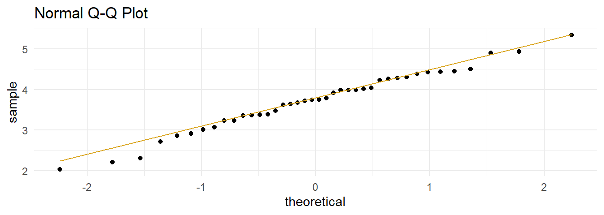
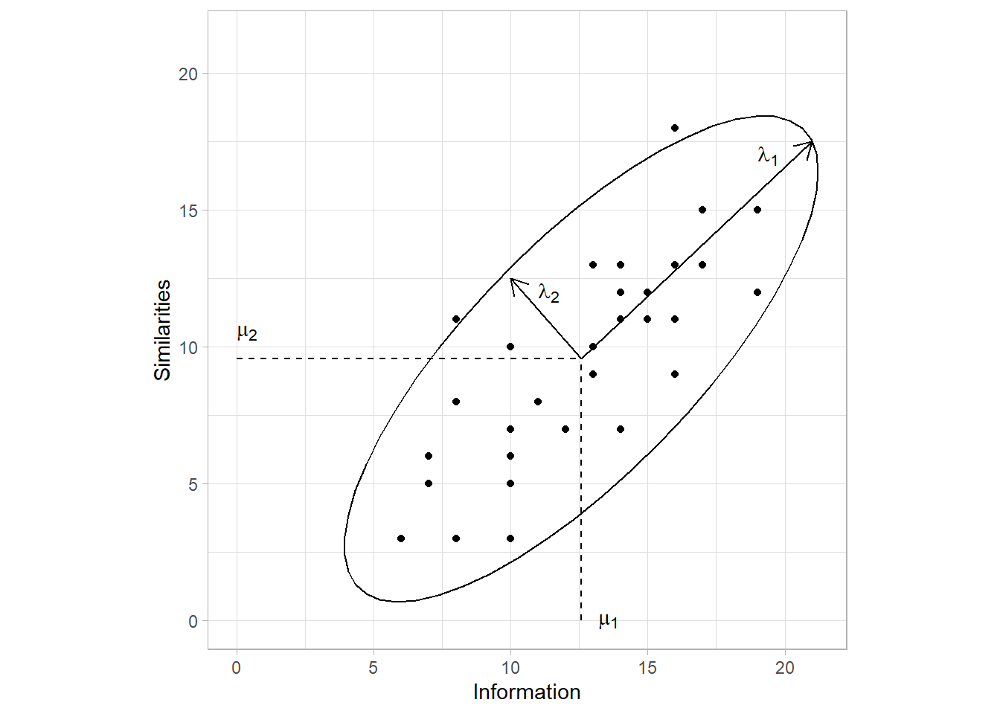
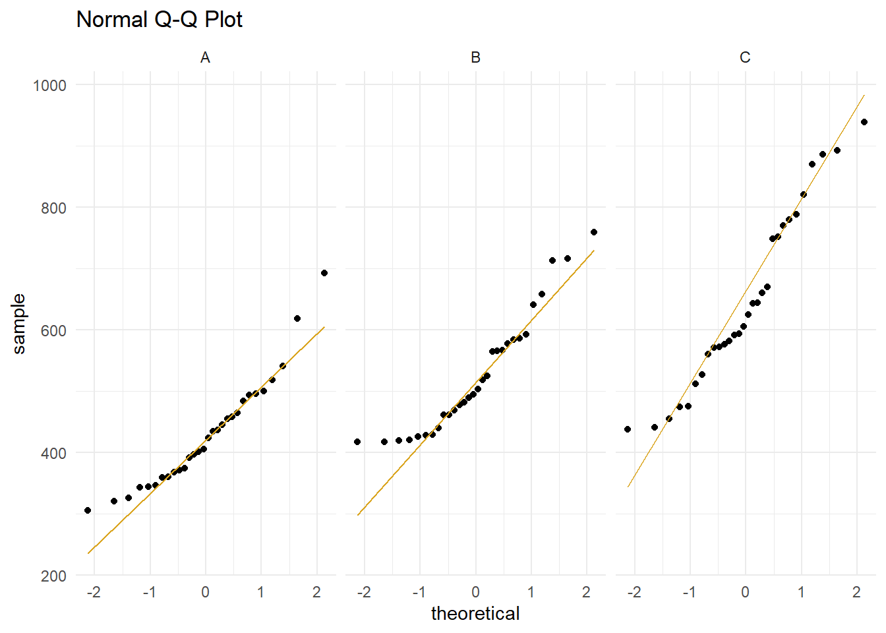
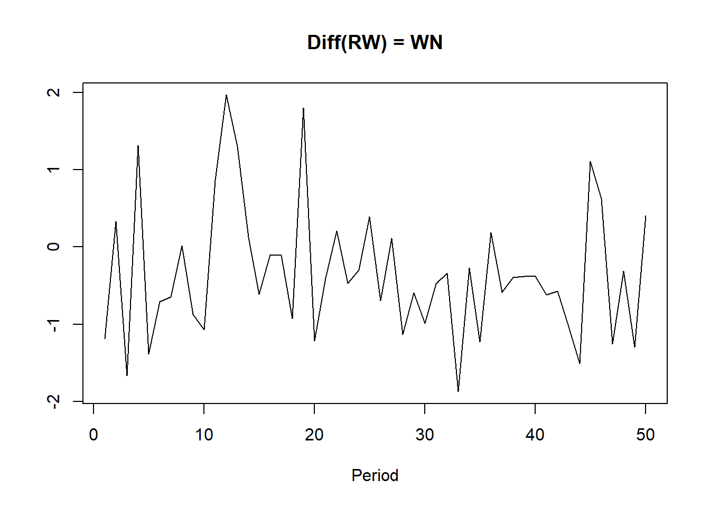
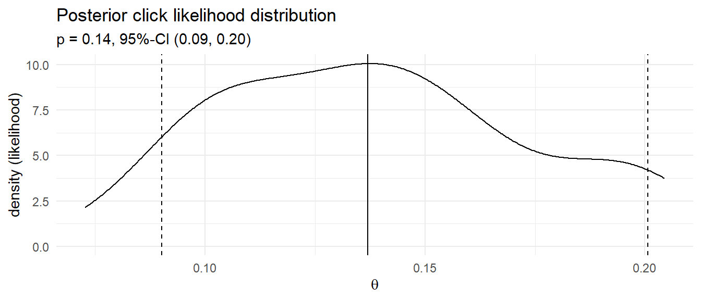
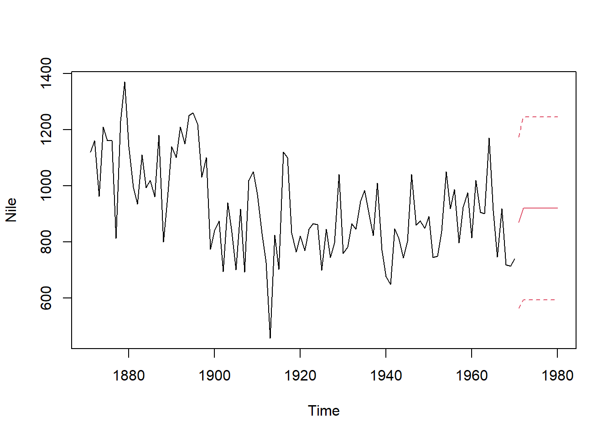
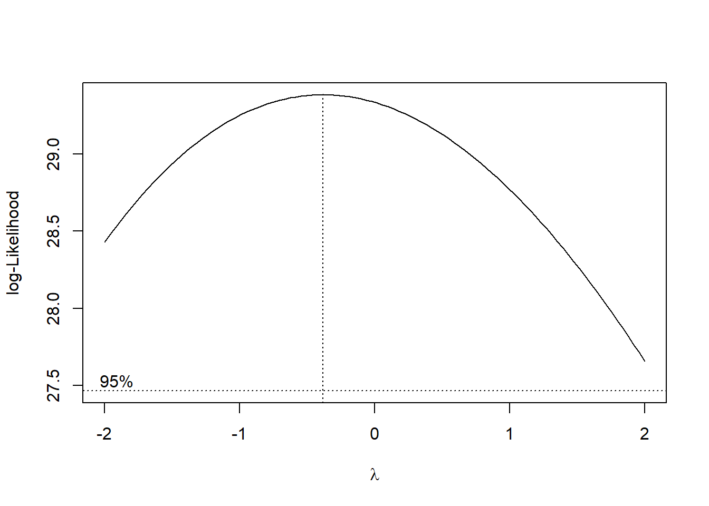
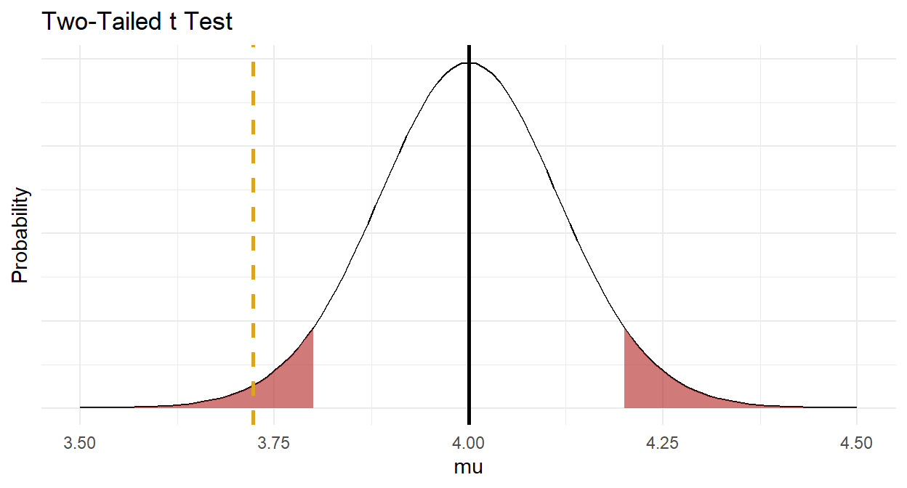
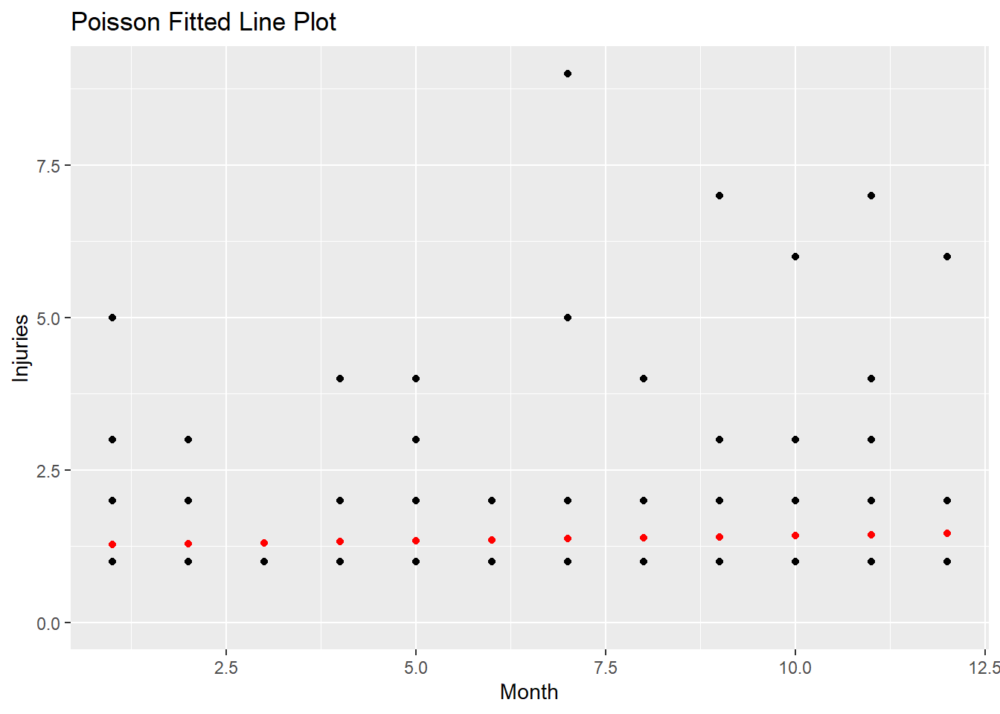

Chapter 1 One-Sample Inference Tests
One-sample tests are used to either describe a variable in terms of frequency or measures of central tendency and spread, or compare a variable to a known or hypothesized population or value.
If the data generating process produces continuous outcomes (either interval or ratio), and the outcomes are symmetrically distributed, then you can treat the sample mean, \(\bar{x}\), as a normally distributed random variable centered at the population mean, \(\mu\). You can then use the distribution to estimate an 95% confidence interval (CI) around \(\mu\), or test the likelihood that \(\bar{x}\) is contained within an 95% CI of an hypothesized population mean, \(\mu_0\). If you (somehow) know the population variance, or the Central Limit Theorem (CLT) conditions hold, you can use the z-test, otherwise you have to use the t-test. The t-test returns nearly the same result as the z-test when the CLT holds, so in practice no one bothers with the z-test except as an aid to teach the t-test. If the outcome is continuous, but not symmetric, then you must use a non-parametric test like the Wilcoxon median test.
If the data generating process produces discrete outcomes (counts), then you can treat the sample count, \(x\), as a random variable from a Poisson, binomial, normal, or multinomial distribution.
For counts over a fixed time or space, then treat the count as a random variable from a Poisson distribution with expected value \(\lambda\) and variance \(\lambda\).
For counts within a fixed total that are then classified into two levels (usually yes/no), then treat the count as a random variable from a binomial distribution with expected value \(n\pi\) and variance \(n\pi(1-\pi)\) where \(\pi = x / n\).
For binomial cases where \(n\ge30\) and the number of occurrences of each of the two levels is \(\ge\) 5, then treat the count as a random variable from the normal distribution with expected valued \(\pi\) and variance \(\frac{\pi(1-\pi)}{n}\).
For counts withing a fixed total that are then classified into three or more levels, then treat the count as a random variable from the multinomial distribution with expected value \(n\pi_j\) and variance \(n\pi_j(1-\pi_j)\).
The above cases can be generalized into a single class of tests, the chi-squared goodness-of-fit test. All of these discrete variable tests are discussed in PSU STATS 504.
1.1 One-Sample Mean z Test
The z test is also called the normal approximation z test. It only applies when the sampling distribution of the population mean is normally distributed with known variance, and there are no significant outliers. The sampling distribution is normally distributed when the underlying population is normally distributed, or when the sample size is large \((n >= 30)\), as follows from the central limit theorem. The t test returns similar results, plus it is valid when the variance is unknown, and that is pretty much always. For that reason, you probably will never use this test.
Under the normal approximation method, the measured mean \(\bar{x}\) approximates the population mean \(\mu\), and the sampling distribution has a normal distribution centered at \(\mu\) with standard error \(se_\mu = \frac{\sigma}{\sqrt{n}}\) where \(\sigma\) is the standard deviation of the underlying population. Define a \((1 - \alpha)\%\) confidence interval as \(\bar{x} \pm z_{(1 - \alpha) {/} 2} se_\mu\), or test \(H_0: \mu = \mu_0\) with test statistic \(Z = \frac{\bar{x} - \mu_0}{se_\mu}\).
Example
The mtcars data set is a sample of n = 32 cars. The mean fuel economy is \(\bar{x} \pm s\) = 20.1 \(\pm\) 6.0 mpg. The prior measured overall fuel economy for vehicles was \(\mu_0 \pm \sigma\) = 18.0 \(\pm\) 6.0 mpg. Has fuel economy improved?
The sample size is \(\ge\) 30, so the sampling distribution of the population mean is normally distributed. The population variance is known, so use the z test.
\(H_0: \mu = 16.0\), and \(H_a: \mu > 16.0\) - a right-tail test. The test statistic is \(Z = \frac{\bar{x} - \mu_0}{se_\mu}=\) 1.97 where \(se_{\mu_0} = \frac{\mu_0}{\sqrt{n}} =\) 1.06. \(P(z > Z) =\) 0.0244, so reject \(H_0\) at the \(\alpha =\) 0.05 level of significance.

The 95% confidence interval for \(\mu\) is \(\bar{x} \pm z_{(1 - \alpha){/}2} se_\mu\) where \(z_{(1 - \alpha){/}2} =\) 1.96. \(\mu =\) 20.09 \(\pm\) 2.08 (95% CI 18.01 to 22.17).

1.2 One-Sample Mean t Test
The one-sample t test applies when the sampling distribution of the population mean is normally distributed and there are no significant outliers. Unlike the z test, the population variance can be unknown. The sampling distribution is normally distributed when the underlying population is normally distributed, or when the sample size is large \((n >= 30)\), as follows from the central limit theorem.
Under the t test method, the measured mean, \(\bar{x}\), approximates the population mean, \(\mu\). The sample standard deviation, \(s\), estimates the unknown population standard deviation, \(\sigma\). The resulting sampling distribution has a t distribution centered at \(\mu\) with standard error \(se_\bar{x} = \frac{s}{\sqrt{n}}\). Define a \((1 - \alpha)\%\) confidence interval as \(\bar{x} \pm t_{(1 - \alpha){/}2} se_\bar{x}\) and/or test \(H_0: \mu = \mu_0\) with test statistic \(T = \frac{\bar{x} - \mu_0}{se_\bar{x}}\).
Example
A researcher recruits a random sample of n = 40 people to participate in a study about depression intervention. The researcher measures the participants’ depression level prior to the study. The mean depression score (3.72 \(\pm\) 0.74) was lower than the population ‘normal’ depression score of 4.0. The null hypothesis is that the sample is representative of the overall population. Should you reject \(H_0\)?
| Characteristic | N = 401 |
|---|---|
| dep_score | 3.72 (0.74) |
|
1
Statistics presented: Mean (SD)
|
|
Conditions
The one-sample t test applies when the variable is continuous and the observations are independent. Additionally, there are two conditions related to the data distribution. If either condition fails, try the suggested work-arounds or use the non-parametric [Wilcoxon 1-Sample Median Test for Numeric Var] instead.
- Outliers. There should be no significant outliers. Outliers exert a large influence on the mean and standard deviation. Test with a box plot. If there are outliers, you might be able to drop them or transform the data.
- Normality. Values should be nearly normally distributed (“nearly” because the t-test is robust to the normality assumption). This condition is especially important with small sample sizes. Test with Q-Q plots or the Shapiro-Wilk test for normality. If the data is very non-normal, you might be able to transform the data.
Outliers
Assess outliers with a box plot. Box plot whiskers extend up to 1.5*IQR from the upper and lower hinges and outliers (beyond the whiskers) are are plotted individually. The boxplot shows no outliers.

If the outliers might are data entry errors or measurement errors, fix them or discard them. If the outliers are genuine, you have a couple options before reverting to Wilcoxon.
- Transform the variable. Don’t do this unless the variable is also non-normal. Transformation also has the downside of making interpretation more difficult.
- Leave it in if it doesn’t affect the conclusion (compared to taking it out).
Normality
Assume the population is normally distributed if n \(\ge\) 30. Otherwise, asses a Q-Q plot, skewness and kurtosis values, or a histogram. If you still don’t feel confident about normality, run a [Shapiro-Wilk Test].
The data set has n = 40 observations, so you can assume normality. Here is a QQ plot anyway. The QQ plot indicates normality.
dep %>%
ggplot(aes(sample = dep_score)) +
stat_qq() +
stat_qq_line(col = "goldenrod") +
theme_minimal() +
labs(title = "Normal Q-Q Plot")
Here is the Shapiro-Wilk normality test. It fails to reject the null hypothesis of a normally distributed population.
##
## Shapiro-Wilk normality test
##
## data: dep$dep_score
## W = 0.98446, p-value = 0.8474If the data is not normally distributed, you still have a couple options before reverting to Wilcoxon.
- Transform the dependent variable.
- Carry on regardless - the one-sample t-test is fairly robust to deviations from normality.
Results
Conduct the t-test. To get a 95% CI around the difference (instead of around the estimate), run the test using the difference, \(\mu_0 - \bar{x}\), and leave mu at its default of 0.
##
## One Sample t-test
##
## data: mu_0 - dep$dep_score
## t = 2.3811, df = 39, p-value = 0.02224
## alternative hypothesis: true mean is not equal to 0
## 95 percent confidence interval:
## 0.04176615 0.51323385
## sample estimates:
## mean of x
## 0.2775The difference is statistically different from 0 at the p = .05 level. The effect size, called Cohen’s d, is defined as \(d = |M_D| / s\), where \(|M_D| = \bar{x} - \mu_0\), and \(s\) is the sample standard deviation. \(d <.2\) is considered trivial, \(.2 \le d < .5\) small, and \(.5 \le d < .8\) large.
## Cohen's d
## 0.3764788Cohen’s d is 0.38, a small effect.
Make a habit of constructing a plot, just to make sure your head is on straight.

Now you are ready to report the results.
A one-sample t-test was run to determine whether depression score in recruited subjects was different from normal, as defined as a depression score of 4.0. Depression scores were normally distributed, as assessed by Shapiro-Wilk’s test (p > .05) and there were no outliers in the data, as assessed by inspection of a boxplot. Data are mean \(\pm\) standard deviation, unless otherwise stated. Mean depression score (3.72 \(\pm\) 0.74) was lower than the population “normal” depression score of 4.00, a statistically significant difference of 0.28 (95% CI, 0.04 to 0.51), t(39) = 2.38, p = 0.022, d = 0.38.
Appendix: Deciding Sample Size
Determine the sample size required for a maximum error \(\epsilon\) in the estimate by solving the confidence interval equation, \(\bar{x} \pm t_{(1 - \alpha){/}2} \frac{s}{\sqrt{n}}\) for \(n=\frac{{t_{\alpha/2,n-1}^2se^2}}{{\epsilon^2}}\) . Unfortunately, \(t_{\alpha/2,n-1}^2\) is dependent on \(n\), so replace it with \(z_{\alpha/2}^2\). What about \(s^2\)? Estimate it from the literature, a pilot study, or using the empirical rule that 95% of the range falls within two standard deviations, \(s=range / 4\).
For example, if the maximum tolerable error is* \(\epsilon\) = 3, and \(s\) is approximately 10, what sample size produces an \(\alpha\) =0.05 confidence level?
## [1] 431.3 One-Sample Median Wilcoxon Test
The Wilcoxon one-sample median test (aka Wilcoxon signed rank test) is a non-parametric alternative to the t-test for cases when the the sampling distribution of the population mean is not normally distributed, but is at least symmetric.
Under the Wilcoxon test, the measured median, \(\eta_x\), approximates the population median, \(\eta\). The method calculates the difference between each value and the hypothesized median, \(\eta_0\), ranks the difference magnitudes, then sums the ranks for the negative and the positive differences, \(W+\) and \(W-\). The test compares the smaller of the two sums to a table of critical values.
Here is a case study. A store claims their checkout wait times are \(\le\) 4 minutes. You challenge the claim by sampling 6 checkout experiences. The mean wait time was 4.6, but the data may violate normality.
data.frame(wait = wait) %>%
ggplot(aes(sample = wait)) +
stat_qq() +
stat_qq_line(col = "goldenrod") +
theme_minimal() +
labs(title = "Normal Q-Q Plot")
Shapiro-Wilk rejects the null hypothesis of a normally distributed population.
##
## Shapiro-Wilk normality test
##
## data: wait
## W = 0.75105, p-value = 0.0204Use the Wilcoxon test instead.
## Warning in wilcox.test.default(wait, mu = 4, alternative = "greater"): cannot
## compute exact p-value with ties##
## Wilcoxon signed rank test with continuity correction
##
## data: wait
## V = 14.5, p-value = 0.2309
## alternative hypothesis: true location is greater than 4A Wilcoxon Signed-Ranks Test indicated that wait times were not statistically significantly higher than the 4-minute claim, z = 14.5, p = 0.231.
1.4 Chi-Squared Goodness-of-Fit Test
Use the chi-squared goodness-of-fit test to test whether the observed frequency counts, \(O_j\), of the \(J\) levels of a categorical variable differ from the expected frequency counts, \(E_j\). \(H_0\) is \(O_j = E_j\). The test applies when the variable is dichotomous, nominal, or ordinal; and the observations are independent. There must also be an expected frequency of at least 5 in each group.
The Pearson goodness-of-fit test statistic is
\[X^2 = \sum \frac{(O_j - E_j)^2}{E_j}\]
where \(O_j = p_j n\) and \(E_j = \pi_j n\). The sampling distribution of \(X^2\) approaches the \(\chi_{J-1}^2\) as the sample size \(n \rightarrow \infty\). The assumption that \(X^2\) is distributed \(\sim \chi^2\) is not quite correct, so you will see researchers subtract .5 from the differences to increase the p-value, the so-called Yates Continuity Correction.
\[X^2 = \sum \frac{(O_j - E_j - 0.5)^2}{E_j}\]
\(X^2 \rightarrow 0\) as the saturated model (the observed data represent the fit of the saturated model, the most complex model possible with the data) proportions approach the expected proportions, \(p_j \rightarrow \pi_j\). The chi-squared test calculates the probability of the occurrence of \(X^2\) at least as extreme given that it is a chi-squared random variable with degrees of freedom equal to the number of levels of the variable minus one, \(J-1\). The test is valid when the data are independent (a random sample, or a randomized experiment), and the expected counts in each cell are \(\ge\) 5.
Example with Theoretical Values
A researcher crosses tall cut-leaf tomatoes with dwarf potato-leaf tomatoes, then classifies the n = 1,611 offspring’s phenotype. The four phenotypes should occur with relative frequencies 9:3:3:1. The observed frequencies constitute a one-way table.
If you only care about one level (or if the variable is binary) of if, conduct a one-proportion Z-test or an exact binomial test. Otherwise, conduct an exact multinomial test (recommended when n <= 1,000), Pearson’s chi-squared goodness-of-fit test, or a G-test.

Conditions
This is a randomized experiment. The minimum expected frequency was 100, so the chi-squared test of independence is valid.
Had the data violated the \(\ge\) 5 condition, you could run an exact test (like the binomial, or in this case, the multinomial), or lump some factor levels together.
Results
You can calculate \(X^2\) by hand, and find the probability of a test statistic at least as extreme using the \(\chi^2\) distribution with 4-1 = 3 degrees of freedom.
(pheno_x2 <- sum((pheno_obs - pheno_exp)^2 / pheno_exp))
## [1] 9.54652
(pheno_p <- pchisq(q = pheno_x2, df = length(pheno_type) - 1, lower.tail = FALSE))
## [1] 0.02284158That is what chisq.test() does. The function applies the Yates continuity correction by default, so I had to specify correct = FALSE to exclude it. In this case, setting it to TRUE has almost no effect because the sample size is large.
##
## Chi-squared test for given probabilities
##
## data: pheno_obs
## X-squared = 9.5465, df = 3, p-value = 0.02284As always, plot the distribution.

At this point you can report,
Of the 1,611 offspring produced from the cross-fertiliation, 956 were tall cut-leaf, 258 were tall potato-leaf, 293 where dwarf cut-leaf, and 104 were dwarf potato-leaf. A chi-square goodness-of-fit test was conducted to determine whether the offspring had the same proportion of phenotypes as the theoretical distribution. The minimum expected frequency was 101. The chi-square goodness-of-fit test indicated that the number of tall cut-leaf, tall potato-leaf, dwarf cut-leaf, and dwarf potato-leaf offspring was statistically significantly different from the proportions expected in the theoretical distribution (\(X^2\)(3) = 9.547, p = 0.023).
If you reject \(H_0\), inspect the residuals to learn which differences contribute most to the rejection. Notice how \(X^2\) is a sum of squared standardized cell differences, or “Pearson residuals”,
\[r_i = \frac{o_j - e_j}{\sqrt{e_j}}\]
Cells with the largest \(|r|\) contribute the most to the total \(X^2\).
## tall cut-leaf tall potato-leaf dwarf cut-leaf dwarf potato-leaf
## 0.28682269 0.67328098 0.02848093 0.01141540The two “tall” cells contributed over 95% of the \(X^2\) test statistic, with the tall potato-leaf accounting for 67%. This aligns with what you’d expect from the bar plot.
Example with Distribution
You need to reduce the degrees of freedom (df) in the chi-squared goodness-of-fit test by 1 if you test whether the data conform to a particular distribution instead of a set of theoretical values.
Suppose you sample n = 100 families and count the number of children. The count of children is a Poisson random variable, \(J\), with maximum likelihood estimate \(\hat{\lambda} = \sum{j_i O_i} / \sum{O_i}\). Test whether the observed values can be described as samples from a Poisson random variable. The probabilities for each possible count are
\[f(j; \lambda) = \frac{e^{-\hat{\lambda}} \hat{\lambda}^j}{j!}.\]

Conditions
This is random sampling. The minimum expected frequency was 2, so the data violates the \(\ge\) 5 rule. Lump the last two categories into “4-5”.

The minimum expected frequency was 6, so now the chi-squared test of independence is valid.
Results
Compare the expected values to the observed values with the chi-squared goodness of fit test, but in this case \(df = 5 - 1 - 1\) because the estimated parameter \(\lambda\) reduces df by 1. You cannot set df in chisq.test(), so perform the test manually.
(X2 <- sum((o - e)^2 / e))
## [1] 7.092968
(p.value <- pchisq(q = X2, df = length(j) - 1 - 1, lower.tail = FALSE))
## [1] 0.06899286
At this point you can report,
Of the 100 families sampled, 19 had no children, 26 had one child, 29 had two children, 13 had three children, and 13 had 4 or 5 children. A chi-square goodness-of-fit test was conducted to determine whether the observed family sizes follow a Poisson distribution. The minimum expected frequency was 13. The chi-square goodness-of-fit test indicated that the number of children was not statistically significantly different from the proportions expected in the Poisson distribution (\(X^2\)(3) = 7.093, p = 0.069).
1.5 G-Test
The G-test is a likelihood-ratio statistical significance test increasingly used instead of chi-squared tests. The test statistic is defined
\[G^2 = 2 \sum O_j \log \left[ \frac{O_j}{E_j} \right]\]
where the 2 multiplier asymptotically aligns with the chi-squared test formula. G is distributed \(\sim \chi^2\), with the same number of degrees of freedom as in the corresponding chi-squared test. In fact, the chi-squared test statistic is a second order Taylor expansion of the natural logarithm around 1.
Returning to the phenotype case study in the chi-squared goodness-of-fit test section, you can calculate the \(G^2\) test statistic and probability by hand.
(pheno_g2 <- 2 * sum(pheno_obs * log(pheno_obs / pheno_exp)))
## [1] 9.836806
(pchisq(q = pheno_g2, df = length(pheno_type) - 1, lower.tail = FALSE))
## [1] 0.02000552This is pretty close to the \(X^2\) = 9.547, p = 0.023 using the chi-squared goodness-of-fit test. The DescTools::GTest() function to conducts a G-test.
##
## Log likelihood ratio (G-test) goodness of fit test
##
## data: pheno_obs
## G = 9.8368, X-squared df = 3, p-value = 0.02001According to the function documentation, the G-test is not usually used for 2x2 tables.
1.6 pairwise.prop.test
library(tidyverse)
M <- 3573
F <- 4177
dat <- tribble(
~gender, ~src, ~Y, ~N,
"Male", "Indeed", 1699, M-1699,
"Male", "LinkedIn", 1755, M-1755,
"Male", "Google", 1578, M-1578,
"Female", "Indeed", 2554, F-2554,
"Female", "LinkedIn", 1914, F-1914,
"Female", "Google", 1694, F-1694
)
prop.test(x = dat$Y, n = dat$Y + dat$N)##
## 6-sample test for equality of proportions without continuity
## correction
##
## data: dat$Y out of dat$Y + dat$N
## X-squared = 412.66, df = 5, p-value < 2.2e-16
## alternative hypothesis: two.sided
## sample estimates:
## prop 1 prop 2 prop 3 prop 4 prop 5 prop 6
## 0.4755108 0.4911839 0.4416457 0.6114436 0.4582236 0.4055542##
## Pairwise comparisons using Pairwise comparison of proportions
##
## data: dat$Y out of dat$Y + dat$N
##
## 1 2 3 4 5
## 2 0.40250 - - - -
## 3 0.02026 0.00021 - - -
## 4 < 2e-16 < 2e-16 < 2e-16 - -
## 5 0.40250 0.02026 0.40250 < 2e-16 -
## 6 6.3e-09 4.8e-13 0.00873 < 2e-16 1.1e-05
##
## P value adjustment method: holm1.7 Exact Tests
If you are confident that your variable can be described by a particular distribution, then you can run a so-called “exact” test comparing your measured value to a hypothesized value, or defining a 95% CI around the measured value.
1.7.1 One-Sample Poisson Test
If \(X\) is the number of successes in \(n\) (many) trials when the probability of success \(\lambda / n\) is small, then \(X\) is a random variable with a Poisson distribution,
\[f(x;\lambda) = \frac{e^{-\lambda} \lambda^x}{x!} \hspace{1cm} x \in (0, 1, ...), \hspace{2mm} \lambda > 0\]
with \(E(X)=\lambda\) and \(Var(X) = \lambda\).
The Poisson likelihood function is
\[L(\lambda; x) = \prod_{i=1}^N f(x_i; \lambda) = \prod_{i=1}^N \frac{e^{-\lambda} \lambda^x_i}{x_i !} = \frac{e^{-n \lambda} \lambda^{\sum x_i}}{\prod x_i}.\]
Its log-likelihood function is
\[l(\lambda; x) = \sum_{i=1}^N x_i \log \lambda - n \lambda.\]
The log-likelihood function is maximized at
\[\hat{\lambda} = \sum_{i=1}^N x_i / n.\]
Thus, for a Poisson random variable, the maximum likelihood estimator (MLE) for \(\lambda\) is just the sample mean.
Poisson sampling is used to model counts of events that occur randomly over a fixed period of time.
Here is a simple analysis of data from a Poisson process. Data set dat contains frequencies of goal counts during the first round matches of the 2002 World Cup.
Here is a case study. A researcher is analyzing World Cup play using a sample consisting of the 95 matches in the first round of the 2002 World Cup. The average match produced 1.38 \(\pm\) 1.28 goals, lower than the 1.5 historical average during World Cup play. The null hypothesis is that the sample is representative of the overall population. Should you reject \(H_0\)?
Conditions
- The events must be independent of each other. E.g., if you are counting goals scored during the first round of the World Cup, you must assume the goals scored in one game do not affect the number of goals scored in another game.
- The expected value of each data-generator must be the same (homogeneity). E.g., you must assume their is no relationship between points scored and which teams are playing. In practice, this assumption is often not met. E.g., some teams are better than others, the weather can affect scoring, etc. When the homogeneity condition fails, the distribution variance tends to be larger than the mean, a conditional called overdispersion.
Results
Conduct the exact Poisson test. To get a 95% CI around the difference (instead of around the estimate), run the test using the difference, \(\lambda_0 - \lambda\), and leave r at its default of 1.
(pois_val <- poisson.test(x = sum(dat_pois$goals * dat_pois$freq),
T = sum(dat_pois$freq), r = 1.5))##
## Exact Poisson test
##
## data: sum(dat_pois$goals * dat_pois$freq) time base: sum(dat_pois$freq)
## number of events = 131, time base = 95, p-value = 0.3567
## alternative hypothesis: true event rate is not equal to 1.5
## 95 percent confidence interval:
## 1.152935 1.636315
## sample estimates:
## event rate
## 1.378947The difference is not statistically different from 0 at the p = .05 level.
Construct a plot showing the 95% CI around the hypothesized value. I’m not sure if you should build it around the hypothesized value to show that the estimate is not within its confidence interval, or around the measured value to show that the confidence interval does not contain the hypothesized value. For a Poisson distribution, I built the distribution around the expected value, \(n\lambda\), not the rate, \(\lambda\).

I think you could report these results like this.
A one-sample exact Poisson test was run to determine whether the number of goals scored in the first round of the 2002 World Cup was different from past World Cups, 1.5. Depression scores were normally distributed, as assessed by Shapiro-Wilk’s test (p > .05) and there were no outliers in the data, as assessed by inspection of a boxplot. Data are mean \(\pm\) standard deviation, unless otherwise stated. Mean depression score (3.72 \(\pm\) 0.74) was lower than the population “normal” depression score of 4.00, a statistically significant difference of 0.28 (95% CI, 0.04 to 0.51), t(39) = 2.38, p = 0.022, d = 0.38.
The 0.95 CI is \(\lambda \pm z_{.05/2} \sqrt{\lambda / n}\)
# n <- sum(dat$freq)
# z <- qnorm(0.975)
# se <- sqrt(lambda / n)
# paste0("[", round(lambda - z*se, 2), ", ", round(lambda + z*se, 2),"]")The expected probability of scoring 2 goals in a match is \(\frac{e^{-1.38} 1.38^2}{2!} = 0.239\).
## [1] 0.2660914events <- 0:10
density <- dpois(x = events, lambda = 3)
prob <- ppois(q = events, lambda = 3, lower.tail = TRUE)
df <- data.frame(events, density, prob)
ggplot(df, aes(x = factor(events), y = density)) +
geom_col() +
geom_text(
aes(label = round(density, 3), y = density + 0.01),
position = position_dodge(0.9),
size = 3,
vjust = 0
) +
geom_line(
data = df,
aes(x = events, y = prob/4),
size = 1) +
scale_y_continuous(sec.axis = sec_axis(~.*4, name = "Cum Prob")) +
# theme_mf() +
# scale_fill_mf() +
labs(title = "PMF and CDF of Poisson Distribution",
subtitle = "Poisson(3).",
x = "Events (x)",
y = "Density")
The expected probability of scoring 2 to 4 goals in a match is
## [1] 0.48922Or, using the cumulative probability distribution,
## [1] 0.48922How well does the Poisson distribution fit the 2002 World Cup data?
# dat_pois %>%
# mutate(pred = n * dpois(x = goals, lambda = lambda)) %>%
# rename(obs = freq) %>%
# pivot_longer(cols = -goals) %>%
# ggplot(aes(x = goals, y = value, color = name)) +
# geom_point() +
# # theme_mf() +
# # scale_color_mf() +
# geom_smooth(se = FALSE) +
# labs(
# title = "Poisson Dist: Observed vs Expected",
# color = "",
# y = "frequencey"
# )It fits the data pretty good!
1.7.2 One-Sample Binomial Test
For a frequency variable you usually use the sample proportion of successes of group \(i\), \(p_i\), as an estimate of the population proportion, \(\pi_i\).
Use the one-sample z-test to evaluate the sample proportion of successes of group \(i\) of a binary or multinomial variable. This test is also called the normal approximation method, and the Wald method.
The z-test uses the sample proportion of group \(j\), \(p_j\), as an estimate of the population proportion \(\pi_j\) to evaluate an hypothesized population proportion \(\pi_{0j}\) and/or construct a \((1−\alpha)\%\) confidence interval around \(p_j\) to estimate \(\pi_j\) within a margin of error \(\epsilon\).
The z-test is intuitive to learn, but it only applies when the central limit theorem conditions hold:
- the sample is independently drawn, meaning random assignment (experiments) or random sampling without replacement from \(n < 10\%\) of the population (observational studies),
- there are at least \(n\pi \ge 5\) successes and \(n(1 − \pi) \ge 5\) failures,
- the sample size is \(n \ge 30\), and
- the probability of success is not extreme, \(0.2 < \pi < 0.8\).
If these conditions hold, the sampling distribution of \(\pi\) is normally distributed around \(p\) with standard error \(se_p = \frac{s_p}{\sqrt{n}} = \frac{\sqrt{p(1−p)}}{\sqrt{n}}\). The measured values \(p\) and \(s_p\) approximate the population values \(\pi\) and \(\sigma_\pi\). You can define a \((1 − \alpha)\%\) confidence interval as \(p \pm z_{\alpha / 2}se_p\). Test the hypothesis of \(\pi = \pi_0\) with test statistic \(z = \frac{p − \pi_0}{se_{\pi_0}}\) where \(se_{\pi_0} = \frac{s_{\pi_0}}{\sqrt{n}} = \frac{\sqrt{{\pi_0}(1−{\pi_0})}}{\sqrt{n}}\).
In the phenotype example above, you might test whether tall cut-leaf tomatoes occurred in the expected proportion, \(\pi_0 = 9 / (9 + 3 + 3 + 1) = 0.5625\). The sample is a random assignment experiment with \(956 \ge 5\) successes and \(1611 - 956 = 655 \ge 5\) failures, sample size \(n = 1611 \ge 30\), and probability of success \(0.2 < 0.5625 < 0.8\), so the Z-test is valid.
##
## 1-sample proportions test without continuity correction
##
## data: 956 out of 1611, null probability 0.5625
## X-squared = 6.2586, df = 1, p-value = 0.01236
## alternative hypothesis: true p is not equal to 0.5625
## 95 percent confidence interval:
## 0.5692397 0.6171563
## sample estimates:
## p
## 0.5934202The first thing you’ll notice is that prop.test() performs a chi-squared goodness-of-fit test, not a one-proportion Z-test!
##
## Chi-squared test for given probabilities
##
## data: c(956, 1611 - 956)
## X-squared = 6.2586, df = 1, p-value = 0.01236It turns out \(P(\chi^2 > X^2)\) equals \(2 \cdot P(Z > z).\) Here is the manual calculation of the chi-squared test statistic \(X^2\) and resulting p-value on 1 dof.
pi_0 <- 9 / (9+3+3+1)
p <- 956 / 1611
observed <- c(p, 1-p) * 1611
expected <- c(pi_0, 1-pi_0) * 1611
X2 <- sum((observed - expected)^2 / expected)
pchisq(X2, 1, lower.tail = FALSE)## [1] 0.01235885And here is the manual calculation of the Z-test statistic \(z\) and resulting p-value.
## [1] 0.01235885The 95% CI presented by prop.test() is also not the \(p \pm z_{\alpha / 2}se_p\) Wald interval; it is the Wilson interval!
## est lwr.ci upr.ci
## [1,] 0.5934202 0.5692397 0.6171563There are a lot of methods (see ?DescTools::BinomCI), and Wilson is the one Agresti-Coull recommends. If you want Wald, use DescTools::BinomCI() with method = "wald".
## est lwr.ci upr.ci
## [1,] 0.5934202 0.5694344 0.617406This matches the manual calculation below.
## [1] 0.5694344 0.6174060prop.test() (and chissq.test()) reported a p-value of 0.01236, so you can reject the null hypothesis that \(\pi = 0.5625\). It’s good practice to plot this out to make sure your head is on straight.

Incidentally, if you have a margin of error requirement, you can back into the required sample size to achieve it. Just solve the margin of error equation \(\epsilon = z_{\alpha/2}^2 = \sqrt{\frac{\pi_0(1-\pi_0)}{n}}\) for \(n = \frac{z_{\alpha/2}^2 \pi_0(1-\pi_0)}{\epsilon^2}.\)
1.7.3 Fisher’s Exact Test
The one-sample t test applies when the sampling distribution of the population mean is normally distributed and there are no significant outliers. Unlike the z test, the population variance can be unknown. The sampling distribution is normally distributed when the underlying population is normally distributed, or when the sample size is large \((n >= 30)\), as follows from the central limit theorem.
Under the t test method, the measured mean, \(\bar{x}\), approximates the population mean, \(\mu\). The sample standard deviation, \(s\), estimates the unknown population standard deviation, \(\sigma\). The resulting sampling distribution has a t distribution centered at \(\mu\) with standard error \(se_\bar{x} = \frac{s}{\sqrt{n}}\). Define a \((1 - \alpha)\%\) confidence interval as \(\bar{x} \pm t_{(1 - \alpha){/}2} se_\bar{x}\) and/or test \(H_0: \mu = \mu_0\) with test statistic \(T = \frac{\bar{x} - \mu_0}{se_\bar{x}}\).
Here is a case study. A researcher recruits a random sample of n = 40 people to participate in a study about depression intervention. The researcher measures the participants’ depression level prior to the study. The mean depression score (3.72 \(\pm\) 0.74) was lower than the population ‘normal’ depression score of 4.0. The null hypothesis is that the sample is representative of the overall population. Should you reject \(H_0\)?
| Characteristic | N = 401 |
|---|---|
| dep_score | 3.72 (0.74) |
|
1
Statistics presented: Mean (SD)
|
|
Conditions
The one-sample t test applies when the variable is continuous and the observations are independent. Additionally, there are two conditions related to the data distribution. If either condition fails, try the suggested work-arounds or use the non-parametric [Wilcoxon 1-Sample Median Test for Numeric Var] instead.
- Outliers. There should be no significant outliers. Outliers exert a large influence on the mean and standard deviation. Test with a box plot. If there are outliers, you might be able to drop them or transform the data.
- Normality. Values should be nearly normally distributed (“nearly” because the t-test is robust to the normality assumption). This condition is especially important with small sample sizes. Test with Q-Q plots or the Shapiro-Wilk test for normality. If the data is very non-normal, you might be able to transform the data.
Outliers
Assess outliers with a box plot. Box plot whiskers extend up to 1.5*IQR from the upper and lower hinges and outliers (beyond the whiskers) are are plotted individually. The boxplot shows no outliers.

If the outliers might are data entry errors or measurement errors, fix them or discard them. If the outliers are genuine, you have a couple options before reverting to Wilcoxon.
- Transform the variable. Don’t do this unless the variable is also non-normal. Transformation also has the downside of making interpretation more difficult.
- Leave it in if it doesn’t affect the conclusion (compared to taking it out).
Normality
Assume the population is normally distributed if n \(\ge\) 30. Otherwise, asses a Q-Q plot, skewness and kurtosis values, or a histogram. If you still don’t feel confident about normality, run a [Shapiro-Wilk Test].
The data set has n = 40 observations, so you can assume normality. Here is a QQ plot anyway. The QQ plot indicates normality.
dep %>%
ggplot(aes(sample = dep_score)) +
stat_qq() +
stat_qq_line(col = "goldenrod") +
theme_minimal() +
labs(title = "Normal Q-Q Plot")
Here is the Shapiro-Wilk normality test. It fails to reject the null hypothesis of a normally distributed population.
##
## Shapiro-Wilk normality test
##
## data: dep$dep_score
## W = 0.98446, p-value = 0.8474If the data is not normally distributed, you still have a couple options before reverting to Wilcoxon.
- Transform the dependent variable.
- Carry on regardless - the one-sample t-test is fairly robust to deviations from normality.
Results
Conduct the t-test. To get a 95% CI around the difference (instead of around the estimate), run the test using the difference, \(\mu_0 - \bar{x}\), and leave mu at its default of 0.
##
## One Sample t-test
##
## data: mu_0 - dep$dep_score
## t = 2.3811, df = 39, p-value = 0.02224
## alternative hypothesis: true mean is not equal to 0
## 95 percent confidence interval:
## 0.04176615 0.51323385
## sample estimates:
## mean of x
## 0.2775The difference is statistically different from 0 at the p = .05 level. The effect size, called Cohen’s d, is defined as \(d = |M_D| / s\), where \(|M_D| = \bar{x} - \mu_0\), and \(s\) is the sample standard deviation. \(d <.2\) is considered trivial, \(.2 \le d < .5\) small, and \(.5 \le d < .8\) large.
## Cohen's d
## 0.3764788Cohen’s d is 0.38, a small effect.
Make a habit of constructing a plot, just to make sure your head is on straight.

Now you are ready to report the results.
A one-sample t-test was run to determine whether depression score in recruited subjects was different from normal, as defined as a depression score of 4.0. Depression scores were normally distributed, as assessed by Shapiro-Wilk’s test (p > .05) and there were no outliers in the data, as assessed by inspection of a boxplot. Data are mean \(\pm\) standard deviation, unless otherwise stated. Mean depression score (3.72 \(\pm\) 0.74) was lower than the population “normal” depression score of 4.00, a statistically significant difference of 0.28 (95% CI, 0.04 to 0.51), t(39) = 2.38, p = 0.022, d = 0.38.
Appendix: Deciding Sample Size
Determine the sample size required for a maximum error \(\epsilon\) in the estimate by solving the confidence interval equation, \(\bar{x} \pm t_{(1 - \alpha){/}2} \frac{s}{\sqrt{n}}\) for \(n=\frac{{t_{\alpha/2,n-1}^2se^2}}{{\epsilon^2}}\) . Unfortunately, \(t_{\alpha/2,n-1}^2\) is dependent on \(n\), so replace it with \(z_{\alpha/2}^2\). What about \(s^2\)? Estimate it from the literature, a pilot study, or using the empirical rule that 95% of the range falls within two standard deviations, \(s=range / 4\).
For example, if the maximum tolerable error is* \(\epsilon\) = 3, and \(s\) is approximately 10, what sample size produces an \(\alpha\) =0.05 confidence level?
## [1] 431.7.4 1 Sample z Test for Categorical Var
This test applies when you know the population variance.
1.7.5 1 sample t Test for Categorical Var
This test applies when you do not know the population variance.
1.7.6 Wilcoxon 1-Sample Median Test for Categorical Var
This test applies when the variable is not normally distributed.